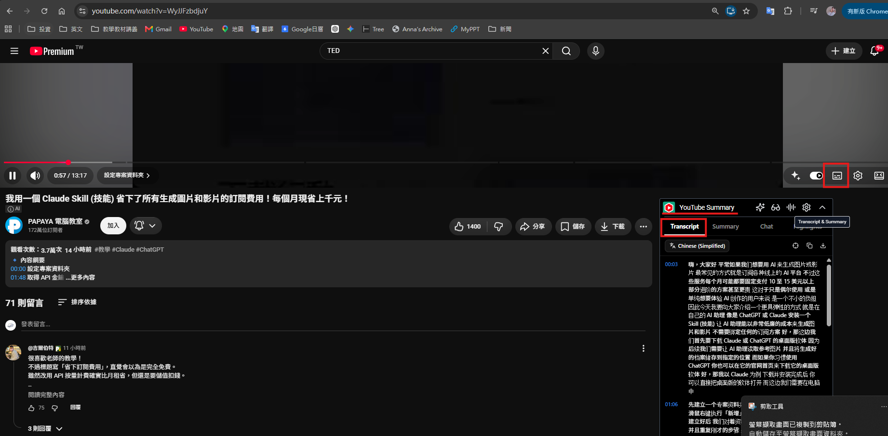
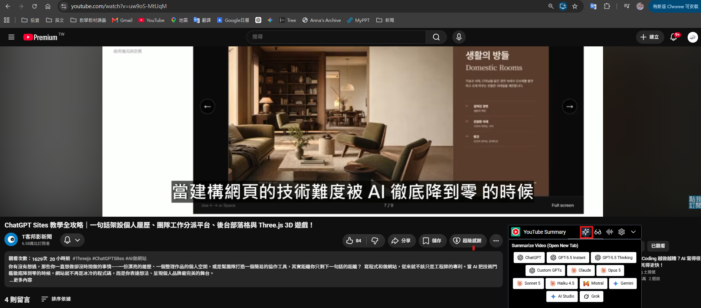
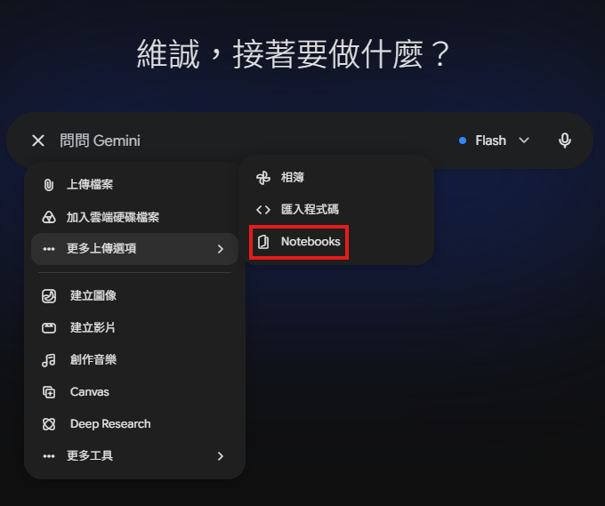
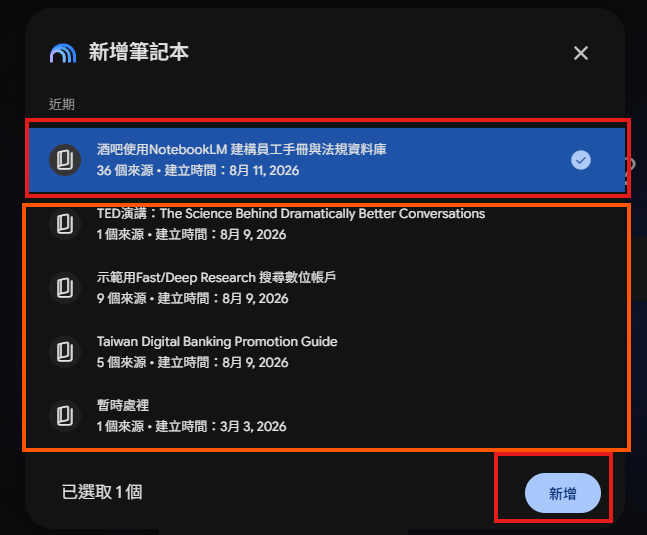
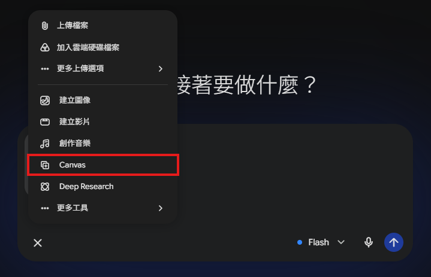

AI知識管理&情報研究術¶
AI 可以協助讀取、摘要、比較、問答與重新編排這些資訊。本章的核心並不是「讓 AI 替我們決定」，而是建立一套可追溯的工作流程：
蒐集來源 → 限定資料 → 提出問題 → 取得摘要 → 查核引用 → 轉成可行動成果
找資料AI工具選擇¶
注意：介面、模型名稱、匯入上限、Pro 功能與免費額度會更新。授課時應以帳號當下顯示為準。
| 情境 | 建議工具 | 適合原因 | 主要限制 |
|---|---|---|---|
| 手上只有片段文字、圖片 | Gemini | 可讀取圖片、翻譯、說明重點 | 可能補入推測，須要求標示不確定處 |
| 沒有資料，需先找基本資訊 | 搜尋 AI／Gemini | 可利用即時網路來源快速彙整 | 搜尋摘要可能漏掉來源或時間差 |
| 已有一批可靠文件或網址 | NotebookLM | 回答以指定來源為主、能附引用 | 來源匯入可能失敗，互動頁面未必可讀 |
| 需要廣泛蒐集來源 | NotebookLM Research | 可探索多個相關來源 | 必須人工篩選來源品質 |
| 要快速理解影片 | NotebookLM／字幕工具 | 可摘要、問答、產生心智圖 | 無字幕影片較慢，辨識可能錯誤 |
| 法律、合約、公司規章 | NotebookLM＋Gemini | 可依指定文件白話解釋與舉例 | 不能取代律師、人資或合規審查 |
文件、網頁、PDF 的得力 AI 助手¶
「研究效率最高的做法，不是一開始就請 AI 寫報告，而是先決定資料是否足夠。資料不足時，漂亮的報告往往只是漂亮的猜測。」
選擇工具的判斷原則¶
- 資料已足夠且來源可信：匯入 NotebookLM，針對既有來源問答。
- 只有少量片段或圖片：先用 Gemini 解讀、翻譯或建立初步概念。
- 完全沒有資料：先用搜尋 AI／Gemini 找基本資訊，再把選定來源匯入 NotebookLM 做深入整理。
案例：2026年中聯大豆沙拉油事件¶
### 相關新聞
https://www.taiwannews.com.tw/news/6393841
https://focustaiwan.tw/society/202607140021
https://www.taiwannews.com.tw/news/6396503
https://news.immigration.gov.tw/NewsSection/Detail/8b1eda68-1847-41cc-9acb-f96f8af03526
https://www.channelnewsasia.com/east-asia/taiwan-taipei-cooking-oil-food-safety-scandal-6280251
https://observatorial.com/news/health/1766351/taiwan-recalls-a-series-of-soybean-oils-containing-carcinogens-exceeding-standards/
步驟：¶
- 從文件複製文字；若無法複製，擷取含重點的區域。
- 將圖片貼入 Gemini。
- 再貼上想理解的外文原文。
- 要求 AI 解釋、翻譯並標示依據。
### 提示詞
你是一位食品安全資訊整理助理。請只根據附件圖片與下方提供的外文文章回答，不要自行搜尋或補充其他資料。
1. 將外文內容翻譯成繁體中文，專有名詞或無法確定的名稱保留原文，不要自行猜譯。
2. 依「事件名稱、發生地點、發生時間、涉及食品或產品、問題原因、檢驗結果、影響範圍、政府或業者處理方式」整理成表格。
3. 原文沒有提供的資訊，一律標示「來源未提供」，不要自行推測。
4. 文章中的日期、數量、濃度、標準值、倍數等重要數字，請保留原文數值與單位，並附上對應的原文片段，方便核對。
5. 將內容區分為「原文明確說明」與「原文未說明」，不要把推測當成事實。
6. 完成後列出 3～5 項「需要進一步查證的問題」，供後續搜尋官方網站或其他可靠來源使用。
讓 AI 做即時搜尋¶
對於GPT：台灣食安事件：苯駢芘超標調查文中提到
衛福部食藥署 (TFDA)除了批號 315-1150404 之外，預防性下架的 500 多項下游產品具體品牌與品名。
中聯油脂工廠經暫停作業調查後，其苯駢芘 (BaP) 超標之具體製程原因為何？
查證目的：確認是脫臭/脫色高溫製程異常，還是加熱系統洩漏或原料儲存設備污染。
那我像瞭解現今狀況：
### 提示詞
https://share.gemini.google/qNrkLoERUbpi
對於文中提到：
衛福部食藥署 (TFDA)除了批號 315-1150404 之外，預防性下架的 500 多項下游產品具體品牌與品名。
中聯油脂工廠經暫停作業調查後，其苯駢芘 (BaP) 超標之具體製程原因為何？
查證目的：確認是脫臭/脫色高溫製程異常，還是加熱系統洩漏或原料儲存設備污染。
我想知道：
* 食藥署到底公布了哪些受影響產品？整理好以Excel 或 PDF給我
* 污染到底是原料還是製程？
* 是原料的話，原料因素有哪些？
* 是製程的話，製程因素有哪些？
* 為什麼只有部分批次超標？如果都是同一條生產線，為什麼只有部分批次超標？
利用 NotebookLM 整理多個網頁¶
如果要同時比較多個銀行的數位帳戶：
# 台新 Richart：
https://richart.tw/TSDIB_RichartWeb/discount/discount-details?discount=261&utm_source=google&utm_medium=gsm&utm_campaign=richart_alwayson_202601&gad_source=1&gad_campaignid=20439256950&gbraid=0AAAAABiKl5T2VAOz2eUuIQatLGgUXWNcd&gclid=Cj0KCQjwp9vTBhCWARIsANaUrjuIC6_7x1bQcBGU9NrEiGyy66f1aHAkr7okoq40cBmsWx9o6vK5F64aAhjcEALw_wcB
# 永豐 DAWHO：
https://dawho.tw/hot/dawhoxisic/?utm_source=google&utm_medium=pmax&utm_term=paid&utm_content=na&utm_campaign=dawhocustomer_account_acquisition_reward_dawho1824_sfy_20260701_na_na&gad_source=1&gad_campaignid=23447527635&gbraid=0AAAABB9cteDX3BTuB73UT_np1Q1wYnysd&gclid=Cj0KCQjwp9vTBhCWARIsANaUrjsnddBPQjxIIBoclIobwSYmBKbMo6qpSvhK002_zxtfEfbEzU1qwdAaAoaDEALw_wcB
# 王道銀行 O-Bank 數位帳戶：
https://www.o-bank.com/web/Event/CM_108022801/index.html?SourceCode=ip-signal_GooglePMAX_2608-newaccount1&CampaignCode=R-AC-2023030901&utm_campaign=R-AC-2023030901&utm_source=ip&utm_medium=GooglePMAX&utm_content=GooglePMAX_signal_2608-newaccount1&utm_term=GooglePMAX_signal&ChannelCode=GooglePMAX&gclsrc=aw.ds&gad_source=1&gad_campaignid=17105007815&gbraid=0AAAAADDfuxg7uJr5t7L8lbUXK9hQzFpwE&gclid=Cj0KCQjwp9vTBhCWARIsANaUrjvDVg4TL2hI00w0AOggPjyRJyjbfN8loqFhtViz8snBZp8DwWIYOoYaAq4MEALw_wcB
# 玉山 e.Fingo：
https://event.esunbank.com.tw/mkt/OpenAccount/marketing/index.html?ven=efingo&_gl=1*1o6lpmv*_ga*MTI5MzUzNjQ5MS4xNzg2MjUwODQ1*_ga_56KQZGV7P0*czE3ODYyNTA4NDQkbzEkZzAkdDE3ODYyNTA4NDQkajYwJGwwJGgw
# 第一銀行 iLEO：
https://www.firstbank.com.tw/sites/fcb/touch/1565687619608
# 將來銀行 NEXT BANK：
https://event.nextbank.com.tw/n-business/%E9%A0%81%E9%9D%A2?gad_source=1&gad_campaignid=20909523547&gbraid=0AAAAAqnO5dHh0uen2yToDsmFf6O1ERyaJ&gclid=Cj0KCQjwp9vTBhCWARIsANaUrjt7maSH4UARWMTsR2NEEuwxttAIXefHeZGh8O6PGliyWcuTWOCLsf0aAkmQEALw_wcB&deviceModeForBot=desktop&slideIndex=0
# 樂天銀行：
https://www.rakuten-bank.com.tw/portal/campaign/2021-new-win
如果要同時比較多個網站，可建立 NotebookLM 筆記本：
步驟¶
- 新增來源，選擇網站。
- 一次貼入多個網址。
- 按「插入」匯入。
- 在對話框要求整理共同重點、差異與來源限制。
### 提示詞
請僅根據已匯入的數位帳戶網站來源，以繁體中文整理：
1. 整理每個數位帳戶的：
* 銀行名稱
* 數位帳戶名稱
* 活期存款優惠利率
* 優惠利率適用金額上限
* 優惠利率條件
* 每月跨行轉帳免費次數
* 每月跨行提款免費次數
* 其他主要優惠
* 優惠活動期限
* 官方網址
2. 比較這些數位帳戶的共同點與差異，特別比較：
* 存款利率
* 優惠金額上限
* 是否需要完成指定任務
* 跨行轉帳與提款優惠
* 優惠期限
3. 依以下使用情境，分析各數位帳戶的適合程度：
* 想把閒置資金放在高利活存的人
* 經常跨行轉帳的人
* 經常使用 ATM 提款的人
* 不想完成複雜任務，只想單純享有優惠的人
4. 特別標示以下資訊：
* 來源未提供
* 需要登入後才能查看
* 網站內容無法確認
* 屬於限時優惠或可能已過期
* 優惠條件描述不完整
每一項結論都附上來源引用。
若不同網站的利率、優惠期限、免費次數或適用條件互相衝突，請將不同說法並列呈現，不要自行判斷哪一個正確。
請勿使用已匯入來源以外的資訊補充，也不要根據一般金融知識自行推測。
Fast Research 與 Deep Research¶
NotebookLM 可用探索來源功能尋找相關資料：
- Fast Research(快速搜尋)：快速搜尋網路或 Google Drive 中的相關來源，查看搜尋結果後，自行選擇要加入 NotebookLM 的資料。
- Deep Research(深度研究)：由 AI 主動搜尋並分析大量網路來源，整理成較完整的研究報告，並提供相關來源供使用者檢視與匯入。
請利用 Fast Research 搜尋「台灣數位帳戶」¶
- 先開一個新的notebook

- 嘗試回答：
- 共找到多少來源？
- 哪些是銀行官方網站？
- 哪些屬於新聞網站？
- 哪些來源你不會加入？為什麼？
請利用 Deep Research 整理台灣數位帳戶的內容¶
- 點選 Deep Research
- 輸入需求
- AI 開始搜尋、自動閱讀網站、產生研究報告
- 檢查引用來源

請 AI 做影片重點摘要¶
「摘要的用途是決定如何使用時間，不是宣稱已經完整看過影片。涉及決策、引用或考核時，仍要回看關鍵片段。」
操作步驟¶
- 建立 NotebookLM 筆記本。
- 新增來源，貼入 YouTube 網址。
- 等待來源完成處理。
- 閱讀 AI 產生的初步摘要。
- 在對話框詢問實務應用或工具建議。
### 提示詞
請只根據這支影片整理：
1. 一句話主旨。
2. 5～8 個核心觀點，每點附時間戳。
3. 講者使用的故事、例子與證據。
4. 哪些內容是講者主張，哪些是可驗證事實。
5. 三個可在客戶訪談中使用的做法。
6. 兩個可能被誤用或過度解讀的風險。
- 從右邊生成語音摘要
- 從右邊生成影片摘要
- 從右邊生成心智圖
-
從右邊生成簡報
-
GPT：TED演講：The Science Behind Dramatically Better Conversations
- GPT：TED演講：The Science Behind Dramatically Better Conversations
- GPT：生成摘要音訊
- GPT：生成摘要影片
- GPT：生成摘要心智圖
- GPT：生成摘要簡報
Glasp：YouTube 與網頁內容整理工具¶
Glasp 是一套 Chrome 擴充功能，除了可以擷取 YouTube 字幕之外，也能整理影片重點、摘要網頁與 PDF，甚至建立自己的知識筆記。
功能：取得 YouTube 字幕逐字稿¶
當 YouTube 影片有提供字幕時，Glasp 可以快速取得完整逐字稿，不需要一段一段複製。
前提：影片本身要有字幕
- 開啟 YouTube 影片。
- 點擊右上角 Glasp。
- 展開 Transcript。
- 選擇字幕語言。

Problem. 請自行找一部 5 分鐘以上 的 YouTube 教學影片。¶
完成以下任務：
- 取得完整逐字稿。
- 將逐字稿貼到記事本。
- 確認字幕是否完整。
功能：AI 一鍵摘要影片¶
Glasp 可以利用 AI 快速整理影片重點，幾秒鐘就能知道影片主要內容。
免費版，次數只有一次。
- 開啟 YouTube。
- 點擊 Glasp。
- 選擇 Summary。
- 等待 AI 產生摘要。

用notebookllm突破無字幕的逐字稿¶
請 AI 解釋複雜的法律／合約用語¶
合約常有冗長句子、專業術語與交叉引用。AI 可以：
- 用白話重述。
- 將長條文拆成義務、禁止事項、例外與責任。
- 舉例說明可能違約與合規情境。
- 分別從不同角色分析風險。
但 AI 不能取代律師，也不能保證條文在特定司法管轄區的法律效果。
範例：以兒童及少年性剝削防制條例第39條為例：¶
「以下是教育性質的文件整理，不是法律意見。涉及簽約、解約、賠償、勞動權益、刑事或監管風險時，請交由合格法律專業人士審查。」
### 提示詞
你是一位法律條文解說助理，不提供正式法律意見，也不代替律師。
請只根據我提供的法律條文或附件內容回答，不得自行補充不存在的條文或案例。
請依序說明：
1. 用一般人容易理解的繁體中文，逐段解釋這段條文的意思。
2. 說明這條文主要規範的是哪些人或哪些情況。
3. 解釋條文中的重要法律名詞，並以白話方式說明。
4. 說明這條文想達成的目的或保護的對象。
5. 舉一個符合條文規定的生活案例。
6. 舉一個可能違反條文的生活案例。
7. 如果條文有例外、但書、期限、罰則或適用限制，請特別標示。
8. 若條文內容不足以判斷法律效果，請明確說明「附件未提供，無法判斷」，不要自行推測。
回答請區分：
- 原文內容
- 白話解釋
- 範例
- 不確定之處
範例：保密條款案例¶
示例條文大意包含：
- 受託人在合約有效期間及期滿／終止後，對機密資訊負保密義務。
- 未經同意不得複製、保存、使用或向第三人揭露。
- 只可在合約目的範圍內使用。
- 如需讓第三人知悉，應確保第三人承擔同等保密責任。
- 違反可能造成損害賠償責任。
Problem. 解讀法律條文¶
請閱讀以下《民法》第184條，利用 AI 解釋內容。
Problem. 比較兩條法律¶
請使用AI查看兩者素材的相關法律與比較：
- 素材一：汽車駕駛人駕駛汽車，不得酒後駕車。
- 素材二：汽車駕駛人駕駛汽車時，不得使用手持式行動電話。
- GPT：法律比較：酒駕與手機使用
請 AI 幫忙做知識管理和教育訓練¶
假設我要開一間酒吧，要使用NotebookLM 建構員工手冊與法規資料庫。
用 NotebookLM 建構員工手冊與法規資料庫¶
NotebookLM 的核心價值是依匯入來源回答，因此適合將公司內規、法規與流程文件集中成可查詢的知識庫。
- 使用NotebookLM Fast/Deep Research搜尋相關資料
- 加入自己找的連結
- 連結：勞動基準法
- 連結：勞動基準法Q&A百問百答第二版
### 提示詞
你是一位資深人事，我要建立一份新職員工教育手冊，裡面包含：
- 員工手冊／員工入職規章。
- 勞動基準法與勞工權益規定。
- 性別平等工作法。
- 育嬰留職停薪規則。
- 職業災害補償與申請資料。
- 請假、加班、報到、考核等內部規範。
- 可以在針對AI給的資料去修正
- 酒吧新進員工教育與法定合規手冊
-
可以依據「酒吧新進員工教育與法定合規手冊」產生測驗
- 酒吧新進員工入職合規實務測驗 (Quiz)
- 可以依據「酒吧新進員工教育與法定合規手冊」產生新人訓練影片：
- 酒吧新進員工教育與法定合規影片
Gemini互動式內部查詢網頁¶
在 NotebookLM 建立的筆記本，除了可以透過 NotebookLM 內建功能轉化成不同形式的內容外，現在也可以連結 Gemini 進行更豐富的應用。透過連結 NotebookLM 筆記本，Gemini 就可以突破附件數量的限制，同時還能控制確保回覆的引用來源，讓應用更加多元。
例如：NotebookLM 生成的內容無法匯出，也沒辦法生成網頁之類的格式。現在連結到 Gemini 這些都不是問題了。延續前一個範例，我們已經整理好公司的公司內規和相關法令，一鍵轉成更方便瀏覽、查詢、分享的網站。
流程¶
- 在 Gemini 插入附件。
- 選擇 NotebookLM。
- 選取一個或多個筆記本。
- 加入附件。
- 開啟 Canvas。
- 下提示詞，建立內部資訊網頁。



### 提示詞
請僅根據附件 NotebookLM 筆記本，建立公司內部規範查詢網頁原型。
頁面包含：
- 公司簡介與架構
- 服務守則
- 報到、晉升與考核
- 工時、加班與休假
- 福利、保險與教育訓練
- 常見問題 Q&A
- 全站關鍵字搜尋
每一項回答顯示來源名稱與更新日期。
若來源沒有答案，顯示「請洽人資」，不可自行補規定。
不要顯示個資、薪資明細或僅限主管的機密內容。
互動式新人訓練 App¶
除了靜態的文件查詢網站外，很多公司會有內部教育訓練的課程，如果手邊有現成的教材，也可以先匯入到 NotebookLM 當作教材資料庫，之後再透過 Gemini 生成輔助的教育訓練網站或互動式 App，提高同仁學習成效